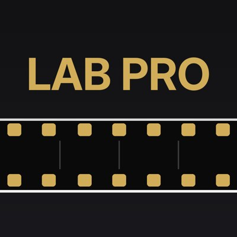
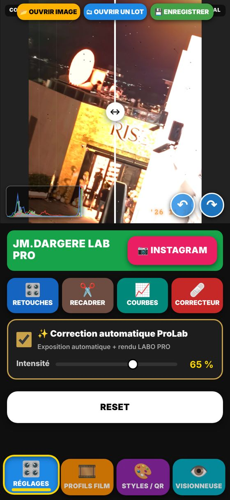
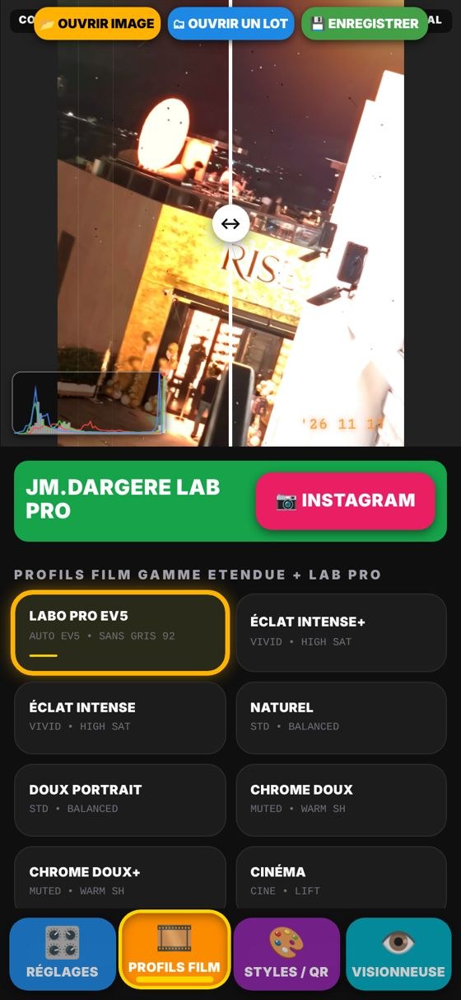
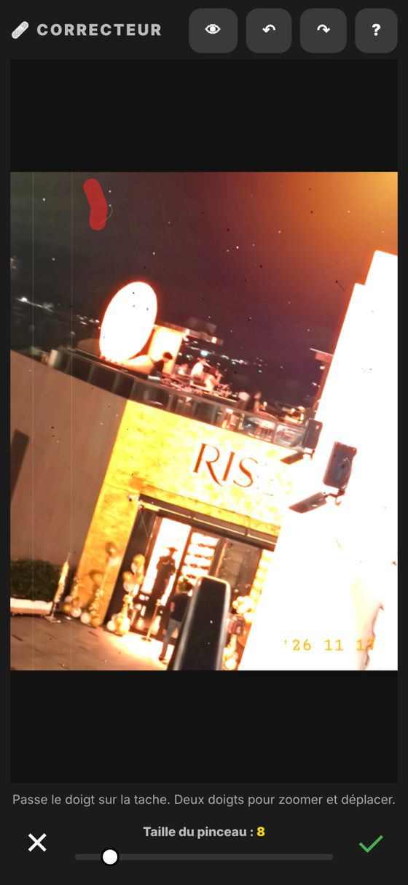

JM LAB PRO
Mode d'emploi
Retouche photo hors ligne
par JM.Dargère
Version 4.7 • novembre 2026
Sommaire
- 1L'écran principal
- 2Profils film et réglages
- 3Retouches (comme Snapseed)
- 4Recadrer et redresser
- 5Courbes
- 6Correcteur
- 7Enregistrer – où sont mes photos ?
- 8Traiter un lot de photos
- 9Styles, QR codes et outils
- 10À propos, langue, confidentialité
- 11Astuces et questions fréquentes
En trois gestes
- Ouvrez une photo avec 📂 OUVRIR IMAGE en haut.
- Choisissez un rendu dans PROFILS FILM, puis affinez dans RÉGLAGES.
- Enregistrez avec 💾 ENREGISTRER.
JM LAB PRO fonctionne sans Internet, sans compte et sans publicité. Vos photos ne quittent jamais votre téléphone.
1L'écran principal
En haut
- 📂 OUVRIR IMAGE : choisir une photo.
- 🗂 OUVRIR UN LOT : choisir plusieurs photos à corriger d'un coup (chapitre 8).
- 💾 ENREGISTRER : enregistrer la photo retouchée (apparaît dès qu'une photo est ouverte).
L'aperçu
- Faites glisser le curseur ↔ : à gauche la photo corrigée, à droite l'originale.
- Histogramme en bas à gauche : la répartition des tons. Un point bleu = ombres bouchées, rouge = hautes lumières brûlées. Touchez-le pour le réduire.
- ↶ ↷ en bas à droite : annuler / rétablir un réglage.
Les onglets en bas
RÉGLAGES • PROFILS FILM • STYLES / QR • VISIONNEUSE

Le bandeau vert : touchez JM.DARGERE LAB PRO pour ouvrir À propos, et 📷 INSTAGRAM pour la page Instagram.
2Profils film et réglages

Profils film
Touchez un profil : la photo prend aussitôt son rendu. Le profil choisi est entouré de jaune.
LABO PRO EV5 exposition autoÉclat Intense vif
Naturel équilibréDoux Portrait peau
Chrome Doux mat chaudCinéma ciné
Noir & BlancPellicule Couleur
Onglet RÉGLAGES
En haut, la barre d'outils :
🎛️ RETOUCHES ✂️ RECADRER 📈 COURBES 🩹 CORRECTEUR
Un outil actif est entouré de jaune.
✨ Correction automatique ProLab
La case active ou désactive la correction automatique (exposition automatique + rendu LABO PRO). Le curseur Intensité règle sa force : 65 % par défaut.
Les réglages de lumière et de couleur se font avec 🎛️ Retouches (chapitre 3). RESET remet tout à zéro (ProLab à 65 %).
⭐ Favoris : vos styles préférés apparaissent en boutons sous la correction ProLab (voir chapitre 9).
3Retouches
Le même fonctionnement que l'outil Retouches de Snapseed : tout se fait en glissant le doigt sur la photo.
Choisir le réglage
Glissez vers le haut ou le bas : la liste apparaît. Levez le doigt sur le réglage voulu : Luminosité, Contraste, Saturation, Ambiance, Hautes lumières, Ombres, Chaleur, Teinte, Structure, Noirs, Blancs, Anti-voile, Vignette.
Ou touchez ☰ en bas.
Changer la valeur
Glissez vers la droite (plus) ou vers la gauche (moins). La valeur s'affiche en haut, et la règle jaune en bas. Vous pouvez aussi toucher la règle directement.
Les boutons
- 👁 maintenu : voir la photo d'origine.
- ↶ ↷ : annuler / rétablir.
- ✨ Auto : correction automatique de la lumière.
- ✕ : quitter sans garder • ✓ : garder.
Les Retouches s'appliquent aussi au lot et sont enregistrées dans vos presets.
6Correcteur
Comme le Correcteur de Snapseed : il efface une poussière, un bouton, un fil, une petite tache.
- Zoomez avec deux doigts sur la zone à corriger (et déplacez-vous avec deux doigts).
- Passez le doigt sur la tache : elle devient rouge.
- Levez le doigt : la tache est remplacée par la matière voisine.
- Taille du pinceau : en bas. Plus le pinceau est fin, plus le résultat est propre.
- 👁 maintenu : voir l'original • ↶ ↷ : annuler / rétablir.
- ✓ garde les corrections (appliquées à l'enregistrement) • ✕ quitte sans garder.
Près d'un bord très contrasté (lampe, ciel blanc), utilisez un pinceau fin et zoomez : un gros pinceau peut copier un morceau de décor voisin.

Le correcteur vaut pour la photo ouverte seulement (chaque photo a ses propres taches).
7Enregistrer – où sont mes photos ?
Touchez 💾 ENREGISTRER. Un bandeau indique le temps de traitement, puis ✔ ENREGISTRÉ avec le nom du fichier. La photo d'origine n'est jamais modifiée : la copie se termine par _JMD_LAB_PRO.jpg.
| Ce que vous faites | Où ça va |
|---|
| 💾 ENREGISTRER (une photo) | Images › JM LAB PRO |
| Lot avec « 🖼️ Galerie » | Images › JM LAB PRO › nom du lot |
| Lot avec « 📂 Dossier choisi » | Le dossier choisi (carte SD, clé USB…) › nom du lot |
| ZIP du lot | Téléchargements › JM LAB PRO |
| Visionneuse | Le dossier d'enregistrement choisi dans la visionneuse |
| Photos supprimées (visionneuse) | Dossier _SUPPRIMES (récupérables) |
| Sauvegardes de vos styles | Images › JM LAB PRO › Sauvegardes |
| Styles exportés, ce mode d'emploi | Téléchargements › JM LAB PRO |
Les retrouver
Dans la Galerie ou Google Photos : album JM LAB PRO. Ou dans l'appli Fichiers : Images (Pictures) › JM LAB PRO.
Ce qui est appliqué à l'enregistrement
Correction ProLab + profil + Retouches + Courbes + Recadrage + Correcteur + Effets (ciel, visage, grain…) + Cadre et signature si activés.